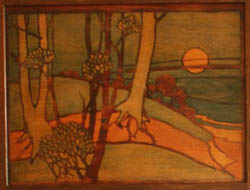

Liberty & Co Arts and Crafts Furniture
 As the Arts and Crafts movement developed in the latter years of the 19th Century, the most prestigious company in the design and marketing of Arts and Crafts furniture and decorative art was Liberty & Co. Perhaps best known for luxurious fabrics and the beautiful pewter, silver and enamelled work of Archibald Knox, the Liberty style also included furniture and an interior design service from their own ‘Studio’. A new book by Daryl Bennett provides a comprehensive account of the range of Liberty Furniture and the evolution of Liberty style. See Liberty’s Furniture 1875 to 1915. The Birth of Modern Interior Design. See the review of this book
As the Arts and Crafts movement developed in the latter years of the 19th Century, the most prestigious company in the design and marketing of Arts and Crafts furniture and decorative art was Liberty & Co. Perhaps best known for luxurious fabrics and the beautiful pewter, silver and enamelled work of Archibald Knox, the Liberty style also included furniture and an interior design service from their own ‘Studio’. A new book by Daryl Bennett provides a comprehensive account of the range of Liberty Furniture and the evolution of Liberty style. See Liberty’s Furniture 1875 to 1915. The Birth of Modern Interior Design. See the review of this book
Liberty & Co opened in Regent Street in 1875 and in the following 30 years developed a glowing reputation for style and quality in furniture and interior decoration. From the early days of imported Arabian, Moorish, and Oriental ware, Liberty design became, with the help of Leonard Wyburd, a defining influence in Arts and Crafts style. The success of Liberty & Co was due in large measure to the business acumen of Arthur Liberty who excelled in creating an exciting shopping experience and in ‘selling the dream’. Liberty’s success however was more than just a marketing phenomenon. The firm established distinctive styles under the direction of artist and designer Leonard Wyburd who created some of the finest examples of Arts and Crafts furniture, prized by museums and collectors today. See Victoria and Albert Museum
The Liberty style evolved through several genres. The founder, Arthur Lasenby Liberty, son of a Nottingham draper learned his trade during the 1860‘s in Farmers and Rogers Emporium in London’s Regent Street, selling the finest fabrics, ceramics and object d’art. Frequented by artists, notably, Whistler, William Morris, Rossetti and Burne Jones, the store specialised in exotic and luxurious goods sourced from the Orient, satisfying the ‘rage for Japan’ and the Aesthetic taste. Arthur Liberty clearly developed great acumen in sourcing rare and beautiful things but also developed a deep appreciation of quality in materials, design and craftsmanship. From 1875 to 1915 Liberty & Co developed and marketed a series of styles or genres ranging from imported exotic luxuries and curios from Asia and Africa to the Aesthetic, and to the Arts and Crafts movement. Perhaps the best known period is that from the 1880s when a young artist desiger, Leonard Wyburd took over the design studio producing some of the very best furniture and furnishing designs in the Arts and Crafts style.
By the end of the 19th century, creating an artistic home became a major pre occupation for many home owners. Art magazines of the day providing illustrated guidance and ‘peeps’ into celebrity homes to show how it was done. The movement which started through the influence of a small group of affluent artists and architects percolated down through the social classes. This evolution was driven by an aversion to the industrial monotony of Victorian society and also by an appetite for modernisation. It is important however to understand that changing preferences for furnishing and the choice of ‘household gods’ was also influenced by individual efforts to educate popular taste. Understanding the popularity and pervasiveness of the Liberty style requires some appreciation of the role of advertising and of individual writers such as Baillie Scott and the efforts of Arthur Liberty himself to tell people how they should and shouldn’t furnish their homes.
Arthur Liberty was a businessman who strove to influence taste and ultimately to make money. He created a shopping empire on the principles of good business acumen, rather than the principles of the Arts and Crafts movement as might be defined by Ruskin or William Morris. Nevertheless, the furniture of Liberty and Co, seemed to capture so perfectly the sentiments, the design and construction which defined the Arts and Crafts style. With the creative and also opportunistic design, high quality construction, and state of the art marketing through catalogues and advertising it is not surprising that Liberty & Co emerged head and shoulders above their competitors. In providing the new middle classes with ‘artistic’ and tasteful furnishing, Liberty & Co also created some of the most beautiful and enduring examples of Arts and Crafts furniture design and decoration.